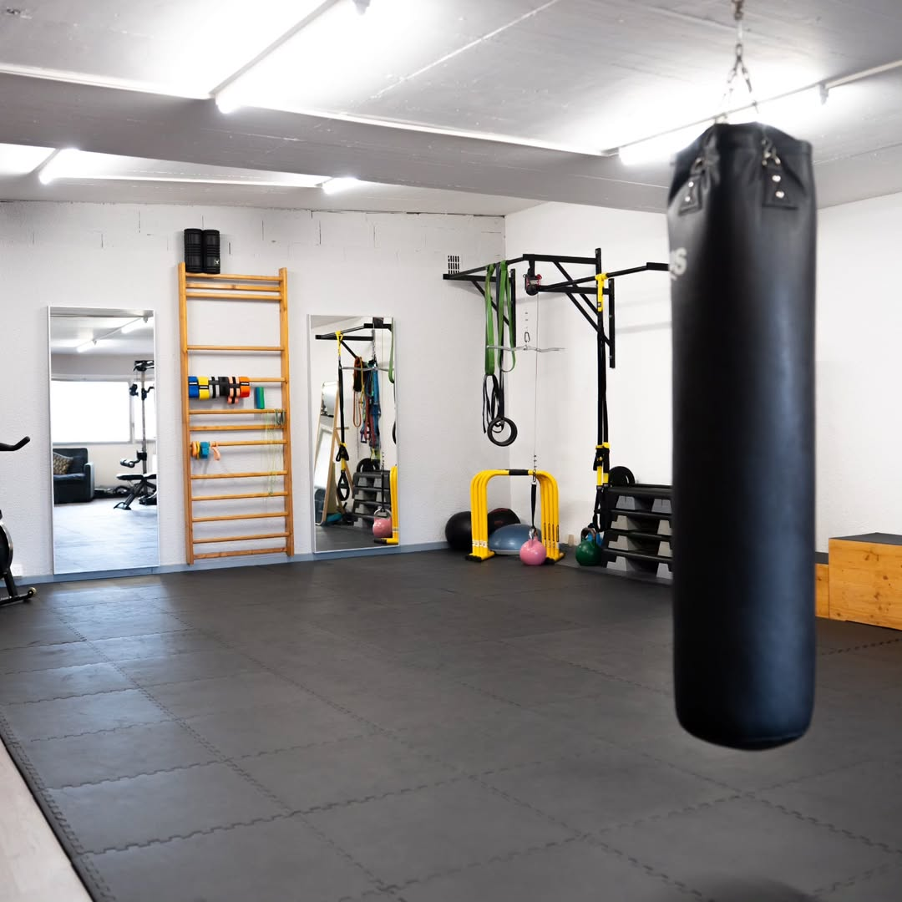
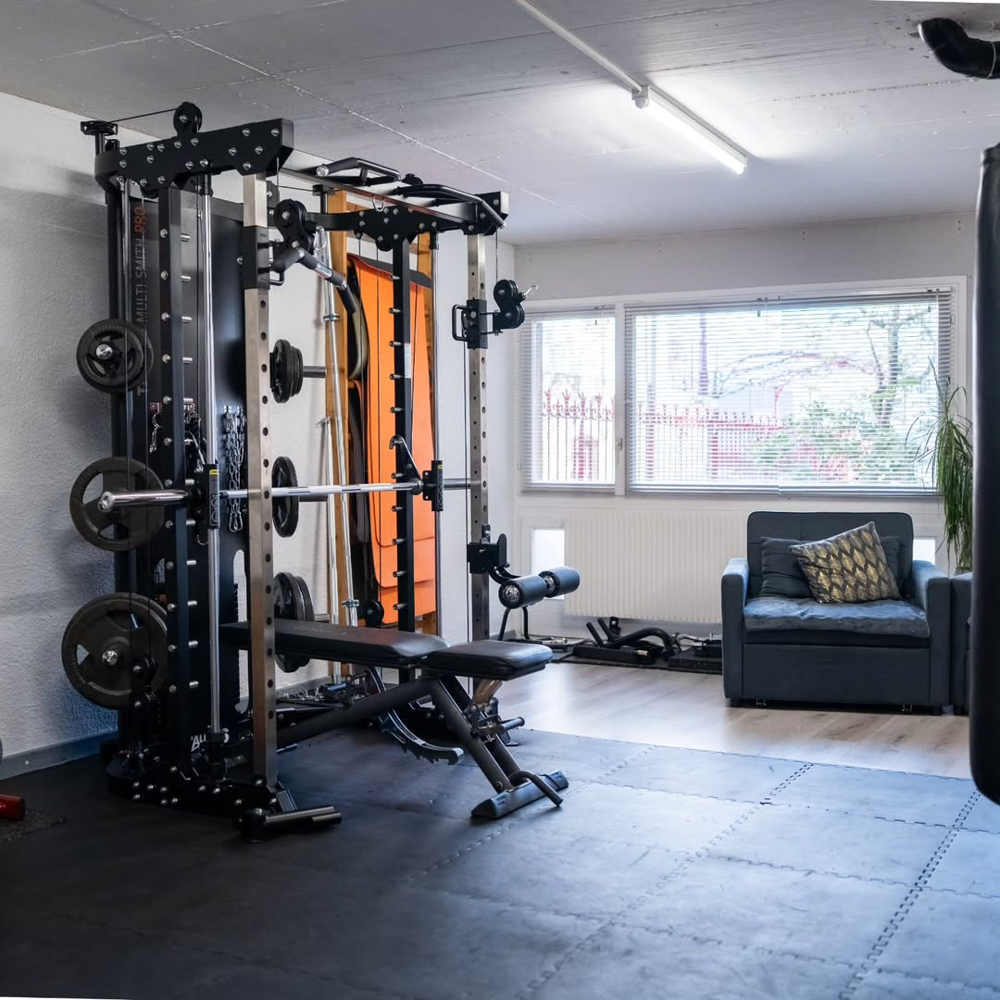
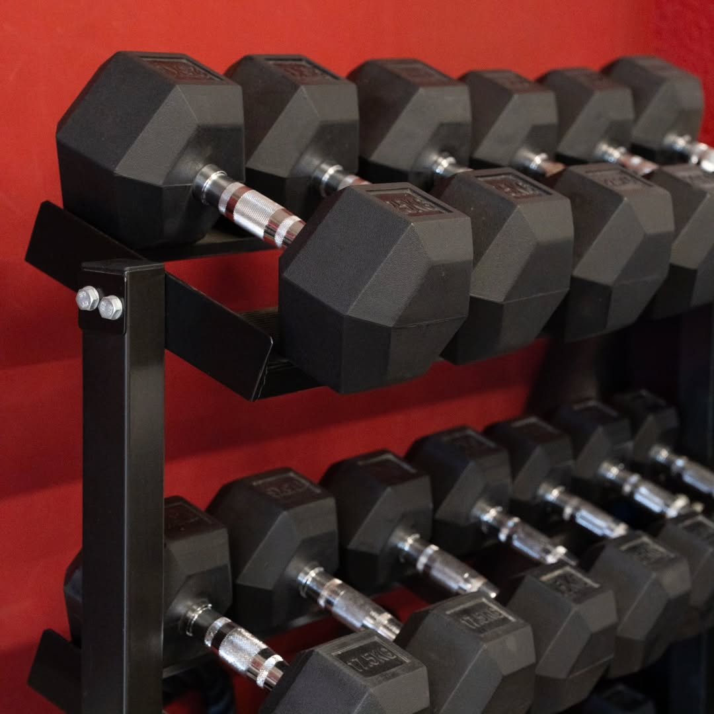
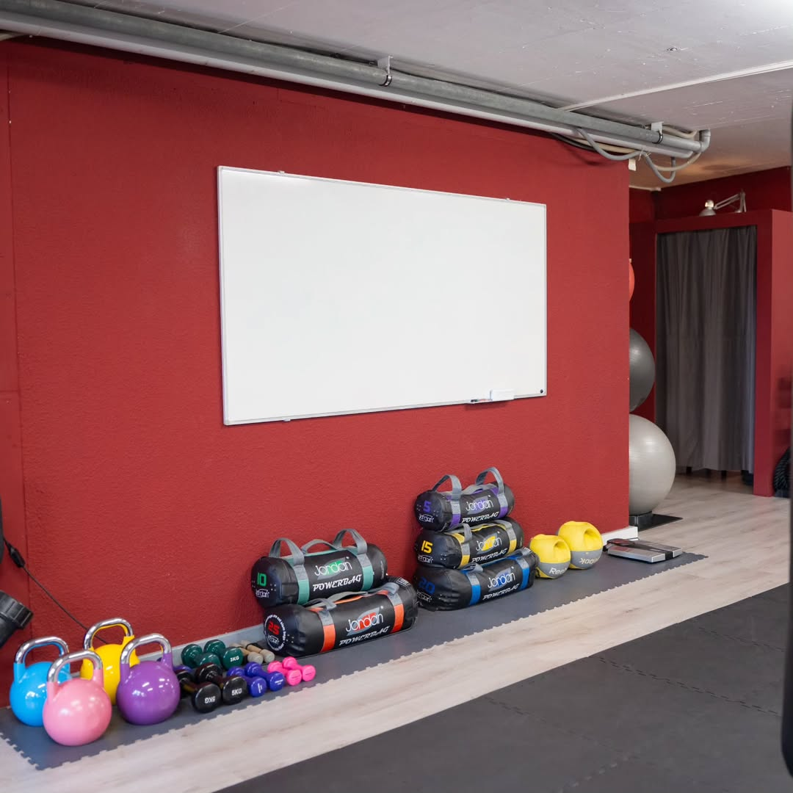
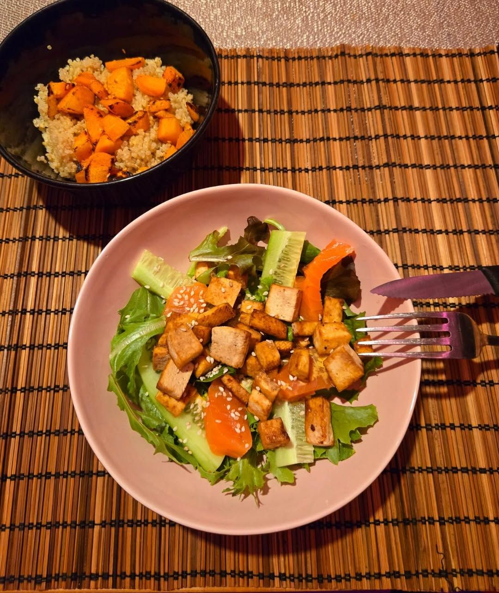

Retrouver la forme
Reprendre avec un cadre progressif et une attention à la régularité.

Lausanne coaching privé
Un accompagnement personnel pour construire force, énergie et habitudes solides — sans extrêmes ni promesse magique.
La règle du jeu
Votre corps n’est pas un projet à corriger. C’est un système à comprendre, renforcer et faire progresser à votre rythme.
Dans ses publications, Svet relie transformation physique, santé, énergie et mental. Le cap annoncé : des résultats visibles et durables, sans plan extrême ni interdiction de vivre.
Le lieu fait partie de la méthode
Pas de décor stock : voici le cadre privé présenté par Svet Fit. Force, mouvement fonctionnel et temps d’échange peuvent y cohabiter.



Photographies du studio publiées par @svetlinafit · crédit indiqué dans la publication : @dely.photography.
Un chemin lisible
Objectif, contraintes, expérience et rythme de vie ouvrent l’échange. Le contenu exact du bilan reste à confirmer.
Une pratique guidée et ajustée : remise en forme, perte de poids, tonification ou renforcement selon la priorité.
Suivi, motivation et repères entre les rendez-vous pour chercher une progression durable, sans résultat garanti.
Ce que l’on vient construire
Le vocabulaire public de Svet Fit parle de forme, de force, de tonification et de nutrition. La démo les organise sans inventer de protocole.
Reprendre avec un cadre progressif et une attention à la régularité.
Développer une force utile avec des repères techniques adaptés.
Construire des habitudes d’entraînement sans raccourci ni corps modèle.
Faire évoluer sa pratique avec un plan et des ajustements réguliers.

Nutrition sans punition
Les publications de Svet évoquent un plan alimentaire personnalisé et une alimentation équilibrée, ajustée à l’objectif, au sommeil et au rythme de vie.
Cette démo présente une philosophie générale. Elle ne formule aucun conseil médical et ne remplace pas un professionnel de santé.
Choisir un rythme
Les prix, durées, inclusions et conditions ne sont pas publics dans les sources consultées. Ils restent volontairement indiqués comme à confirmer.
01 — Découverte
À confirmer
Une porte d’entrée pour préciser le point de départ et le format pertinent.
02 — Individuel
À confirmer
Un format privé construit autour de l’objectif, du niveau et du rythme.
03 — Continuité
À confirmer
Une continuité entre entraînement, motivation et repères alimentaires.
Une présence, pas un personnage
Le compte confirmé @svetlinafit présente une transformation physique qui associe coaching privé, plan alimentaire personnalisé, suivi et motivation.
La bio complète, les diplômes, l’expérience et une photographie portrait restent à confirmer avant une version officielle. Rien n’est déduit.
Voir les preuves encore attenduesPour les entreprises
La démo conserve un espace pour des séances destinées au personnel. Formats, taille de groupe, lieu, disponibilité et devis doivent être validés par Svet Fit.
Définir l’offre entreprisesPréparer l’échange
Cette demande est simulée : aucune donnée n’est envoyée, stockée ou transmise.
Avant de commencer
Le compte montre un espace privé dédié. L’adresse exacte, les horaires et les autres modes de séance restent à confirmer.
Coaching personnalisé, suivi, motivation et plan alimentaire sont mentionnés publiquement. Durée, prix, fréquence et conditions restent à préciser.
La démo refuse d’exposer le corps ou les données de santé d’un tiers comme argument de vente sans consentement éditorial spécifique.
Non. C’est une démonstration Atelier Lumina : le formulaire fonctionne visuellement mais n’envoie et ne conserve rien.
La pièce qui manque
Tarifs, adresse, horaires, entreprises, conditions et preuves professionnelles sont regroupés au même endroit.
Compléter les informations